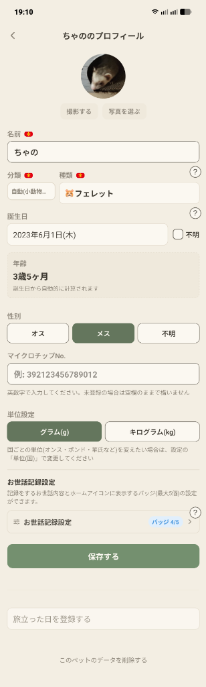

Q. 候補にない種類のペットも登録できますか？
はい。「種類」の欄にそのまま種類名を入力し、左側の「分類」から犬・猫・小動物・鳥・爬虫類・両生類・魚・昆虫・その他のうち近いものを選べば登録できます。
新しいペットの登録画面や、「ペット設定」タブから開くプロフィール編集画面では、ペットの写真・基本情報・体重の単位・お世話記録設定をまとめて管理できます。

丸いアイコンの下にある「撮影する」「写真を選ぶ」からペットの写真を設定できます。
赤い必須マークが付いた「名前」「分類」「種類」は登録に必須です。「種類」に名前（例：フェレット）を入力して候補から選ぶと、「分類」も自動(小動物)のように自動で決まります。候補にない種類の場合は、そのまま自由に入力して「分類」から近いものを選びます。
「誕生日」を選択すると、その下の「年齢」欄に現在の年齢（例：3歳5ヶ月）が自動的に計算されて表示されます。また、毎年の誕生日予定がカレンダーに自動で作成されます。
お迎えしたばかりなどで誕生日がわからない場合は、右側の「不明」にチェックを入れることで空欄のまま登録できます。
「マイクロチップNo.」には英数字の識別番号を控えとして残せます（未登録の場合は空欄のままで構いません）。
「単位設定」では、このペットの体重をグラム(g)で表示・入力するか、キログラム(kg)にするかをペットごとに個別に選べます。
「お世話記録設定」の行をタップすると、このペットで記録する項目やホームアイコンに表示するバッジ（例：バッジ 4/5）を選べるシートが開きます（詳しくは「お世話記録設定と作成した記録項目」を参照）。
また、画面の一番下には誤操作を防ぐため離した位置に「旅立った日を登録する」ボタンと「このペットのデータを削除する」ボタンを配置しています。
はい。「種類」の欄にそのまま種類名を入力し、左側の「分類」から犬・猫・小動物・鳥・爬虫類・両生類・魚・昆虫・その他のうち近いものを選べば登録できます。
誕生日欄の右にある「不明」にチェックを入れると、空欄のまま登録できます。あとから変更することも可能です。
はい。「単位設定」はペットごとに保存されるため、1匹ずつグラム(g)とキログラム(kg)を使い分けられます（オンス・ポンド・華氏などの国別の単位は「設定」タブの「単位(国)」から変更できます）。
体重や健康記録などのデータは一切消えません。登録後はプロフィール画面で「ホーム画面に表示する」のオン/オフをいつでも切り替えられます。